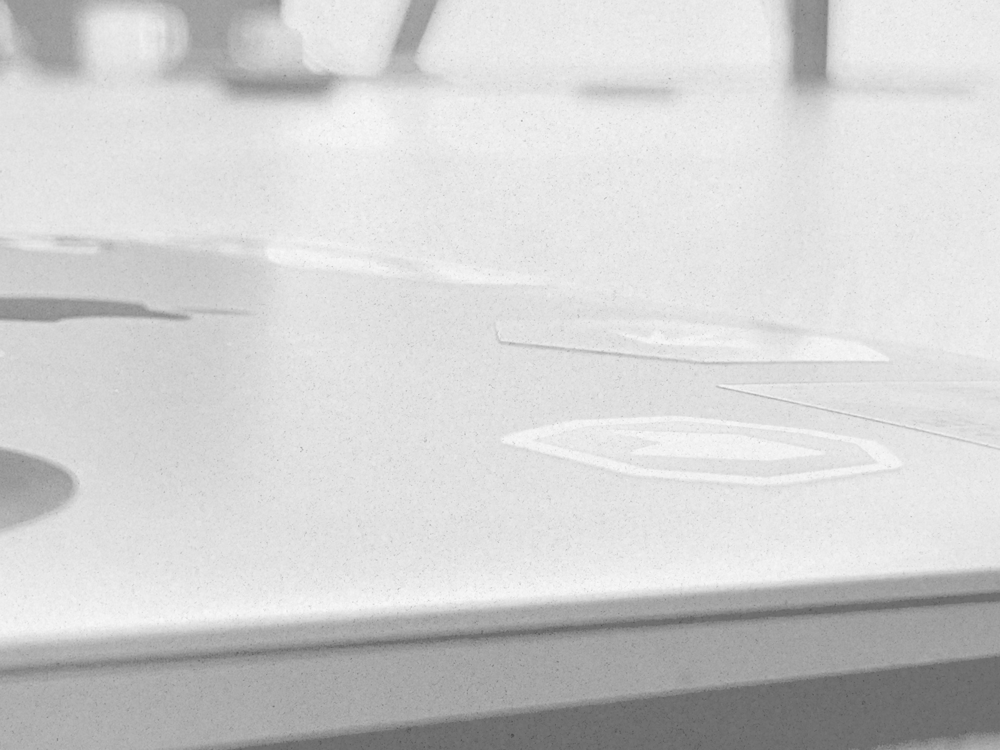

Sidtyper
Fem sidtyper
Alla sidor byggs av samma sektioner i en bestämd ordning. Välj sidtyp först, bygg sedan.
| Sidtyp | Öppning | Typografiprofil | Header | Sektioner |
|---|---|---|---|---|
| Startsida | Hero med foto och vit platta | Showcase | Sticky, kollapsar vid scroll | Expertis-split, erbjudandekort, case, kontakt |
| Ingångssida | Kicker, rubrik, underrubrik, knappar, ingress | Standard | Fast, roterar bort (--rotate) | Bildplatta, kort, processteg, case, kontaktkort, CTA |
| Artikel / case | Sidtitel med brödsmula | Editorial | Fast, roterar bort | Löptext, infoblock efter varandra, citat, fler case |
| Textsida (om oss) | Sidtitel (DocTitle) med underrubrik | Editorial | Fast, roterar bort | Löptext, infoblock, tidslinje, värdekort |
| Verktyg / app | Mörk rosagrå topbar, tvåkolumns arbetsyta | — | Applikationsmeny | Kontrollpanel + canvas. Se formulär och feedback |
Öppning
Sidhuvud för ingångssidor
Brödsmula, kicker, rubrik, underrubrik, ett knappar-par och en ingress. Den här sidan öppnar på samma sätt.
Expertisområde
Hållbara
digitala tjänster
Vi bygger digitala lösningar som löser era faktiska problem.
<div class="mg-ingang-hero"><div class="mg-ingang-col">
<nav class="mg-breadcrumb">…</nav>
<p class="mg-kicker">Expertisområde</p>
<h1 class="mg-ingang-title">Rubrik</h1>
<p class="mg-ingang-sub">Underrubrik</p>
<div class="mg-ingang-actions">… två knappar …</div>
<p class="mg-ingang-intro">Ingress …</p>
</div></div>- Brödsmulan på exakt samma höjd på alla undersidor (156 px från sidtopp)
- En primär och en sekundär knapp, i den ordningen
- Rubriken är H1, en per sida
- Rubriken under headern så att brödsmulan skyms
- Mer än två knappar
- Linje under hero
- Innehållet börjar under headern:
padding-top: var(--mg-header-h)(fast header tar ingen plats i flödet)
Öppning
Sidtitel (DocTitle)
För artiklar, case och textsidor. Stor rubrik, underrubrik och en valfri liten etikett. Aldrig en linje under.
Vi har levererat värde i 30 år
Vi hjälper er bygga hållbara lösningar för långa relationer
Sedan 1996- Underrubrik i text-2, 22 pt med luftigt radavstånd
- Brödsmula ovanför rubriken
- Linje eller ram under titeln
- Titel i magenta
Innehåll
Sektionshuvud
Varje sektion börjar med etikett (kicker), magenta H2 och en kort ingress. Det är det som signalerar att en ny idé börjar.
Specialistområden
Vad vi erbjuder inom Digitala tjänster
Oavsett om ni behöver enskilda konsulter eller kompletta agila team anpassar vi oss efter era behov.
<div class="mg-section-head">
<p class="mg-label">Specialistområden</p>
<h2>Vad vi erbjuder</h2>
<p>Ingress …</p>
</div>- Etiketten beskriver kategorin, inte innehållet
- Sektionens H2 är magenta, en rubrik per sektion
- Etikett under rubriken
- Fler än en H2 i sektionshuvudet
Avdelare
Rosagrå sektion
Rosa sektioner ger rytm och ersätter linjer. De har polygonkanter och ligger mellan vita sektioner.
Uppdrag
Projekt som gör skillnad
Ett urval av uppdrag vi gjort.
<section class="mg-section--rose">
<div class="mg-wrap"> … </div>
</section>- Växla vit och rosa sektion nedåt på sidan
- Lägg vita kort på rosa sektion så att formerna syns
- Två rosa sektioner efter varandra
- Svart eller starkt färgad sektionsbakgrund
- Egen clip-path på sektioner: använd
.mg-section--rose
Innehåll
Bild och text
Två kolumner: text med kicker, rubrik, ingress och knapp, intill en polygonformad svartvit bild som rätas ut vid hover.
Bygg din affär med AI och digital innovation
Magello omsätter AI och automation till verklig affärsnytta.
Läs mer
- Byt sida på bilden mellan sektioner
- Knappen är sektionens enda primära handling
- Två bilder i samma split
- Text över bilden
Innehåll
Case-kort
Bild, kicker, rubrik och en rad. Rosa textyta med polygonform under en svartvit bild. Hela kortet är en länk.
- Foto svartvitt, rubrik = kundens namn
- Visa 3–4 case och en ”Se alla uppdrag”-knapp
- Färgfoton
- Mer än två rader beskrivning
Layout
Artikel: allt i en kolumn
Undersidor är en enda kolumn. Ingress och löptext går i full bredd. Informationsrutor läggs efter varandra i flödet och aldrig i en smal högerkolumn.
Magello i korthet
Vi utgår från vårt kontor i Stockholm med räckvidd över hela landet. Texten fortsätter i full bredd även efter informationsrutorna.
Hur vi arbetar
Nästa avsnitt börjar direkt efter rutan.
| Ordning | Innehåll |
|---|---|
| 1 | Brödsmula och sidtitel |
| 2 | Ingress i full bredd |
| 3 | Löptext (.mg-prose) |
| 4 | Citat (valfritt) |
| 5 | Informationsrutor efter varandra, i full bredd |
| 6 | Mer löptext |
- Texten återgår till 100 % bredd efter en ruta
- Fakta i en rad inne i rutan
float: righteller en smal högerkolumn för informationsrutor- Två kolumner på artikelsidor
- Direktiv: använd inte högerställda informationsrutor. Lägg dem efter varandra som den rosagrå infoblock-rutan
Avslut
Uppmaning och sidfot
Sidan avslutas med en uppmaning (rubrik, text, en primär knapp) och sidfoten i tre kolumner utan linje ovanför.
| Kolumn | Innehåll |
|---|---|
| 1 | Magello (magenta), adress |
| 2 | Organisationsnummer, momsnummer |
| 3 | Telefon, e-post, webb (högerjusterad) |
- Sidfot i liten text,
--mg-text-2 - Behåll tre kolumner på desktop, stapla på mobil
- Linje ovanför sidfoten
- Mörk sidfot